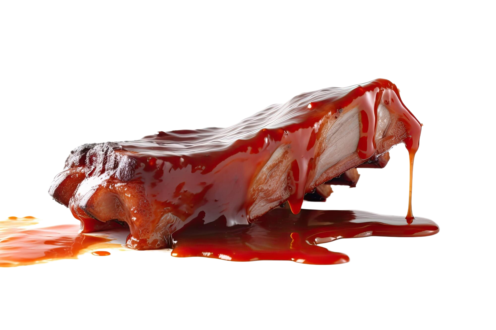

Quinoa & Cranberry Salad
Avocado Toast
Vegan

Non Vegan
Vegan
Non Vegan

HamBurger

BBQ Ribs
The cuisine of the United States is a diverse blend of influences from around the world, shaped by its multicultural population and regional ingredients. Classic American dishes include burgers, barbecue, fried chicken, and apple pie, while regional specialties like New Orleans gumbo, Texas brisket, and New England clam chowder highlight local flavors. Fast food culture is a major part of American dining, but the country also boasts a growing farm-to-table movement and a deep appreciation for international cuisines.